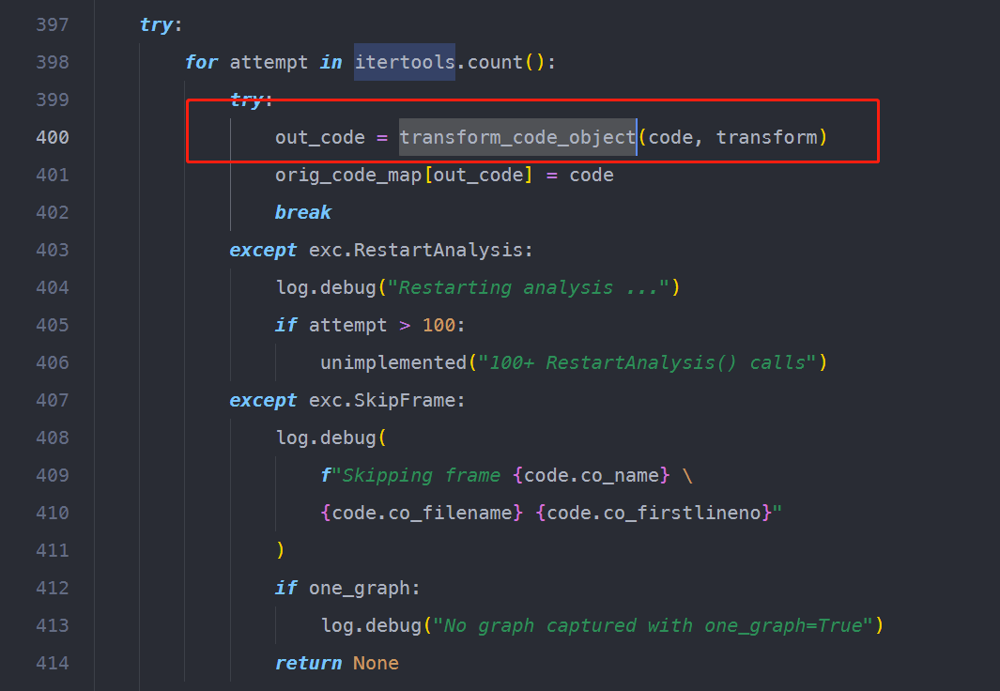

pytorch dynamo 介绍
介绍
Dynamo在不牺牲Python用户体验的情况下，适时地寻找优化的机会。
dynamo在Python字节码执行前对其进行动态修改。它重写Python字节码，以便将PyTorch操作的序列提取到FX Graph中，然后用不同的后端和自动调整的组合进行及时编译。它通过字节码分析来创建这个FX Graph，旨在生成子图，可以与Python的执行相混合，以获得两个世界的最佳效果：可用性和性能。
这里要强调的是，pytorch为了保证不破坏eager模式，不会介意把一个完整的大图切成小图分别编译。
从硬件的角度考虑，我们当然希望数据留在device上的时间越长越好，即不要切分子图，尽量保证模型能用少量的大图表示。留的越久，给硬件厂商程序员优化的机会就越多。但是上层算法应用的工程师不会这么想问题，除非他特别了解你的硬件，或者你的硬件在市场是有着极高的占有率。
PyTorch的图建立过程是基于tracing的，因为pytorch一开始是一个eager的框架，然后在一些东西上添加了图的东西。tracing是重用已有的eager代码的最简单方法。很明显，MLIR是从另一端来的，这也是有效的，但它处于在权衡曲线的另一端。
基于mlir的层级转换方式，总是在丢失原本的信息。最终使得编译表示与原始训练脚本彻底解耦。这一过程也彻底与整个基于pytorch的算法生态链失去联系。同时，这里一个比较关键的问题是，mlir的方式似乎并没有给出一个完美的动态图编译的方案。自动梯度求导也是一个大问题。pytorch的编译做法与之相反：要完整的保留算法实现，即在不对原始表达方式做任何外部更改的情况下产生编译结果。
Graph
对于一个图，我们关心它的三个部分：
- 输入；
- 图中的操作；
- 输出；
这三个部分都可以用节点（Node）来表示。
Node的创建过程

那么transformcodeobject的输入参数之一，code，是从哪里来的呢？
code的来源
dynamo的context通过在python解释过程中设置回调函数，来修改原始的比特码。

code是eval_frame的回调函数的输入参数，是python解释器提供给它的。
回调函数设置的实现过程
dynamo通过调用setevalframe接口来设置回调函数。

它的实现在torch/csrc/dynamo/evalframe.c中。调用关系为：setevalframepy → setevalframe。


enableevalframeshim 将当前PyThreadState的evalframe的入口设置为customevalframe_shim。
evalframecallback_set会调用cpython的api：

来设置Thread Specific Storage (TSS) 中存储的值。这是为了将回调函数保存在当前线程的全局存储位置。
线程本地存储
线程本地存储（TLS）使用线程本地的静态或全局内存。
虽然在现代编程中一般不鼓励使用全局变量，但UNIX等传统操作系统是为单处理器硬件设计的，需要一些额外的机制来保留冗余前API的语义。这种情况的一个例子是，函数使用一个全局变量来设置错误条件（例如，C库的许多函数使用的全局变量errno）。如果errno是一个全局变量，一个线程上的系统函数的调用可能会覆盖先前由不同线程上的系统函数的调用所设置的值，可能在不同线程上的后续代码能够检查错误条件之前。解决方案是让errno成为一个看起来像全局的变量，但实际上每个线程只存在一次，也就是说，它生活在线程的本地存储中。第二个用例是多个线程将信息累积到一个全局变量中。为了避免出现竞赛条件，对这个全局变量的每一次访问都必须由一个突变器来保护。或者，每个线程可以将信息积累到一个线程本地变量中（根据定义，不能从其他线程中读取或写入，这意味着不可能存在竞赛条件）。然后，线程只需将自己的线程本地变量的最终积累同步到一个真正的全局变量中。
许多系统对线程本地内存块的大小进行了限制，事实上通常是相当严格的限制。另一方面，如果一个系统能够提供至少一个内存地址（指针）大小的线程本地变量，那么这就允许以线程本地的方式使用任意大小的内存块，方法是动态分配这样一个内存块，并将该内存块的内存地址存储在线程本地变量中。在RISC机器上，调用惯例常常为这种使用保留一个线程指针寄存器。
Thread Specific Storage (TSS)
在python中，TSS的出现是为了解决TLS值的键的类型（int）问题。这是由最初的PyThread TLS API定义的。
最初的TLS API是由GvR在1997年添加到Python中的，当时用来表示TLS值的键是一个int，一直到写这篇文章时都是如此。这使用了CPython自己的TLS实现，该实现在Python/thread.c中长期未被使用，基本上没有变化。
选择int来表示TLS密钥的问题在于，虽然它对CPython自己的TLS实现来说是很好的，而且恰好与Windows兼容（Windows使用DWORD来表示类似的数据），但它与POSIX标准的pthreads API不兼容，该标准将pthreadkeyt定义为一个不透明的类型，没有被标准进一步定义（如上面描述的Pytsst） 。这使得底层实现可以决定如何使用pthreadkeyt的值来查询线程特定的数据。
对于Python的API来说，这通常不是一个问题，因为在Linux上pthreadkeyt刚好被定义为无符号的int，所以与Python的TLS API完全兼容--由pthreadcreatekey创建的threadkeyt可以自由地转换为int并返回（好吧，不完全是，正如问题#22206所指出的，即使这样也有一些局限）。
然而，至少有一些平台（即Cygwin、CloudABI，但也可能有其他平台）有其他现代的、符合POSIX标准的pthreads实现，但与Python的API不兼容，因为它们的pthreadkeyt的定义方式不能安全地投到int。事实上，在加入pthreads TLS的时候，MvL就提出了遇到这个问题的可能性。

上图中执行fn的过程，即是用回调函数处理原始bytecode的过程。
code的转换
对于一段pytorch代码：
def f(src,index):
return torch.zeros(3, 5, dtype=src.dtype).scatter_(0, index, src)
下图展示了python解析出的bytecode。

输入参数src, index的转换
输入参数存放在frame.flocals中，在回调函数执行编译过程的时候传递给compile函数。


它们会被VariableBuilder加工为symbolics。

它会根据f_locals的类型，生成不同的symbolics。

在这一过程中，会向graph中添加node。

bytecode的转换
转换过程发生在IntructionTranslator.run中。

具体地，每次执行step时处理一条bytecode指令。

RETURN_VALUE触发子图编译
当step解析到RETURN_VALUE指令时，会根据之前收集到的图信息，做一次子图编译。


可以理解为：dynmao的攒图过程一直持续到当前函数返回，或者说当前栈帧执行结束。